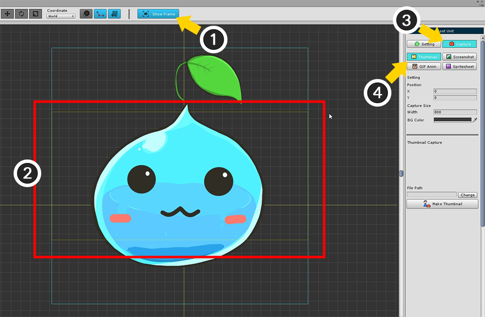
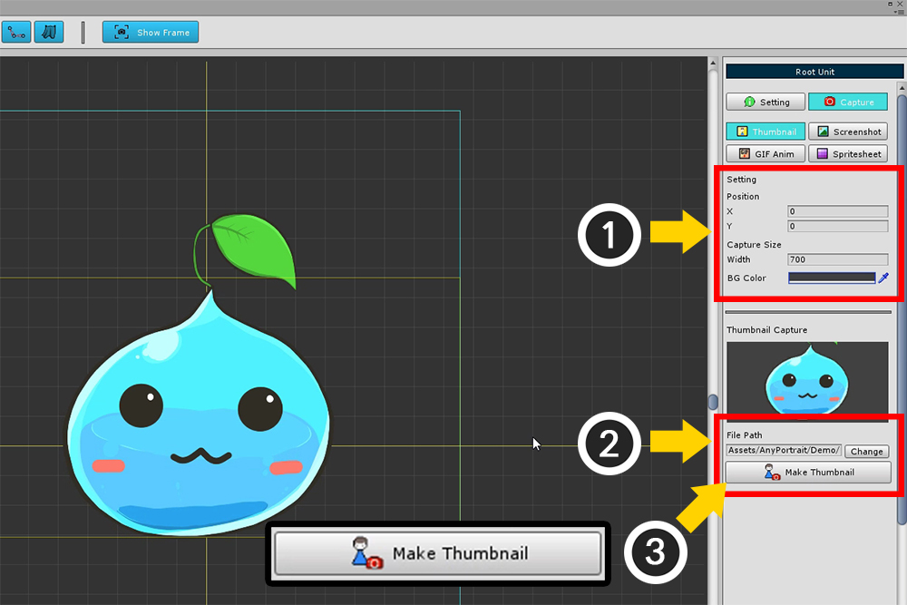

AnyPortrait > Getting Started > 1.10. Creating a Thumbnail
1.10. Creating a Thumbnail
1.0.3

When you launch AnyPortrait, you will see the selectable apPortrait objects on the left side of the screen.
However, the name alone is inconvenient to distinguish.
If the thumbnails are displayed together, it will be convenient to distinguish them.

You can create a thumbnail with the Root Unit selected.
(1) Press Show Frame to display the capture area. (It is on by default.)
(2) Yellow rectangle of capture area is saved as thumbnail.
(3) Select the Capture tab.
(4) Select Thumbnail from the screen capture tool.

The following is the order of thumbnail creation.
(1) Set the capture area. Specify the position and size. You can also change the background color of the thumbnail.
(2) Specify the path where the thumbnail image is saved. The target path must be in the Assets folder.
(3) Press the Make Thumbnail button to save the thumbnail.

When you open the editor again, you can see that the created thumbnail has been applied.
Screen capture is covered in more detail on the Related Page.